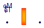
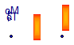

| Name | Description |
|---|---|
| Tank_adiabaticWall | Tank with wall |
| Tank_exchangingWall | Tank with wall |
Tank with wall

Extends from Interfaces.Water.PartialTwoPort_water (Partial component with two ports).
| Type | Name | Default | Description |
|---|---|---|---|
| Volume | V | 1 | max contained water volume [m3] |
| Volume | Vstart | 0.001 | initial water volume [m3] |
| Area | S | 1 | exchanging surface (inner and outer) [m2] |
| Area | Sb | 0.2 | base area for level/pressure [m2] |
| Temperature | Tstart | 273.15 + 25 | initial temp (fluid and metal) [K] |
| Pressure | pin | 0 | mean pressure at the flanges(used in case of a boiler) [Pa] |
| Type | Name | Description |
|---|---|---|
| WaterFlange | water_flange2 | |
| WaterFlange | water_flange1 | |
| HeatPort | fluid | |
| output RealOutput | oM | Mass of water |
| output RealOutput | oT | Temperature of water |
Tank with wall

Extends from Interfaces.Water.PartialTwoPort_water (Partial component with two ports).
| Type | Name | Default | Description |
|---|---|---|---|
| Volume | V | 1 | max contained water volume [m3] |
| Volume | Vstart | 0.001 | initial water volume [m3] |
| Area | S | 1 | exchanging surface (inner and outer) [m2] |
| Area | Sb | 0.2 | base area for level/pressure BEFORE Sb=0.01 [m2] |
| Mass | Mm | 10 | metal mass [kg] |
| SpecificHeatCapacity | cm | 500 | metal specific heat [J/(kg.K)] |
| CoefficientOfHeatTransfer | gwm | 5 | heat transfer coeff (fluid/metal) [W/(m2.K)] |
| Temperature | Tstart | 273.15 + 25 | initial temp (fluid and metal) [K] |
| Pressure | pin | 0 | mean pressure at the flanges(used in case of a boiler) [Pa] |
| Type | Name | Description |
|---|---|---|
| WaterFlange | water_flange2 | |
| WaterFlange | water_flange1 | |
| HeatPort | fluid | |
| HeatPort | wall | |
| output RealOutput | oM | Mass of water |
| output RealOutput | oT | Temperature of water |